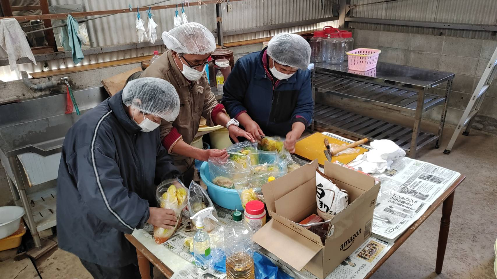
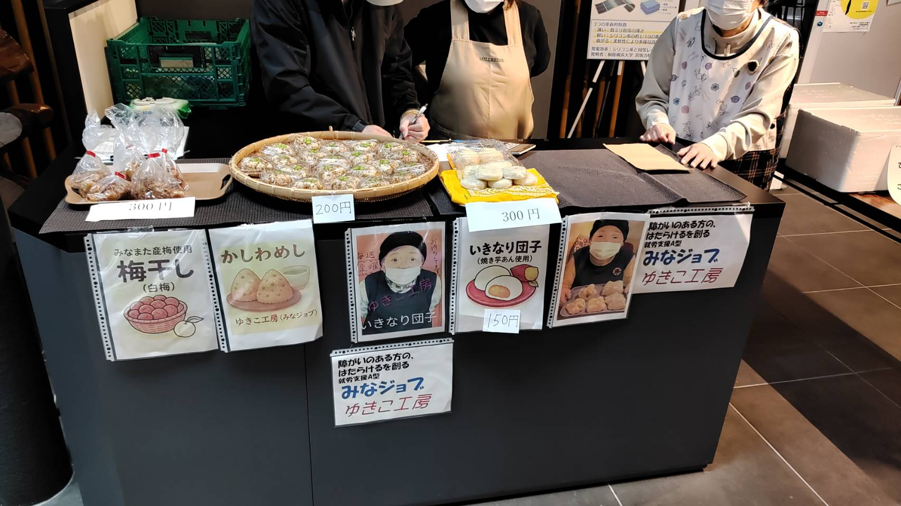
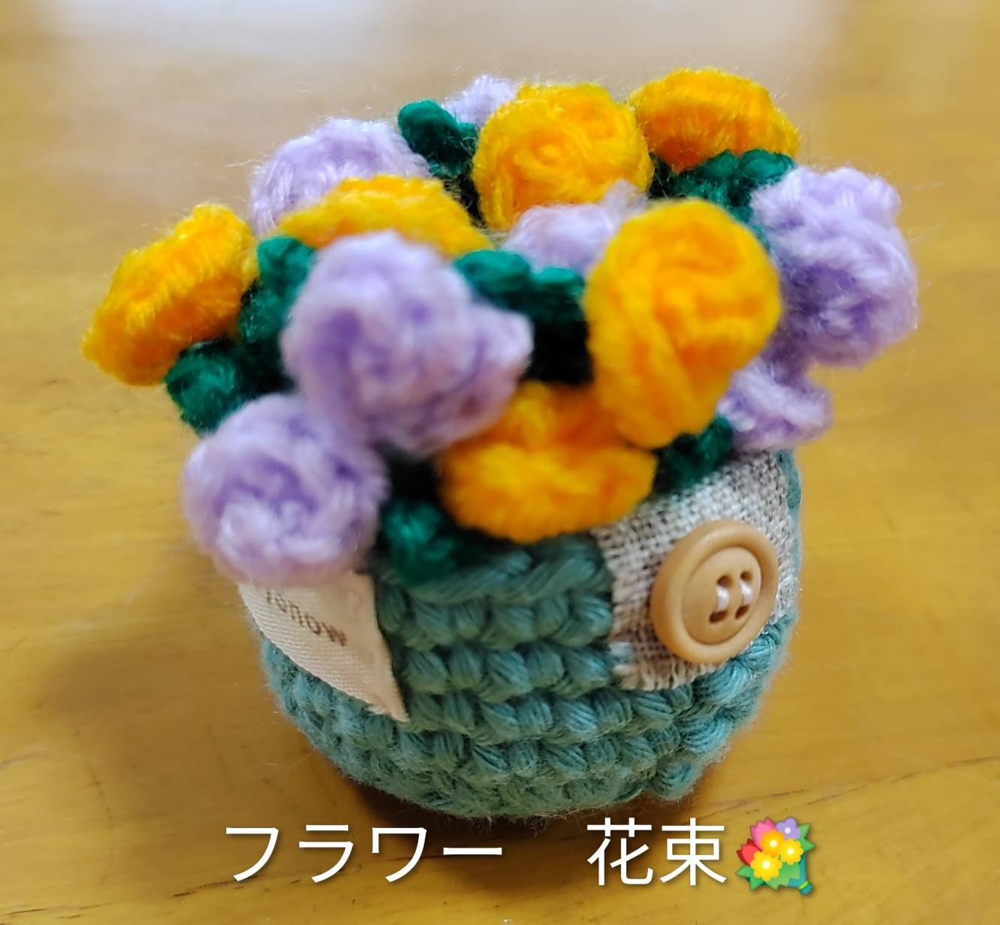
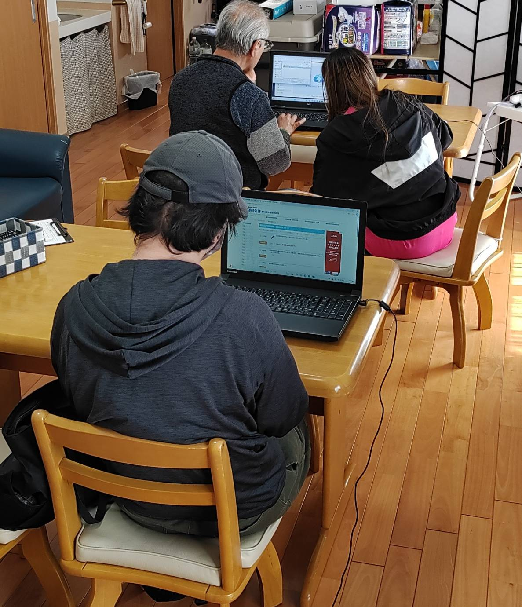
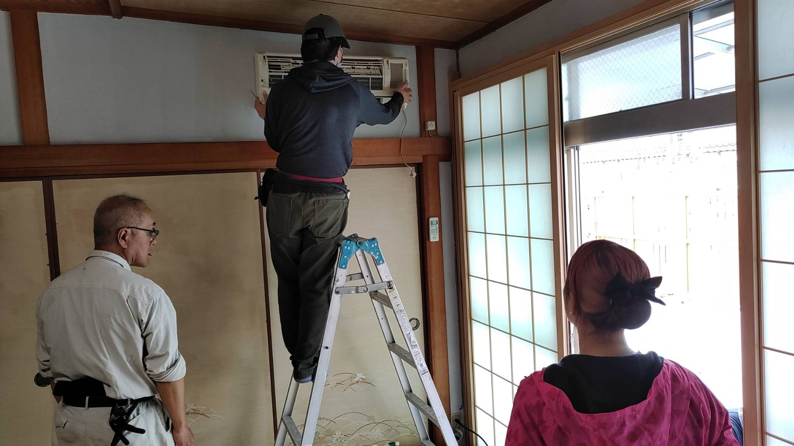
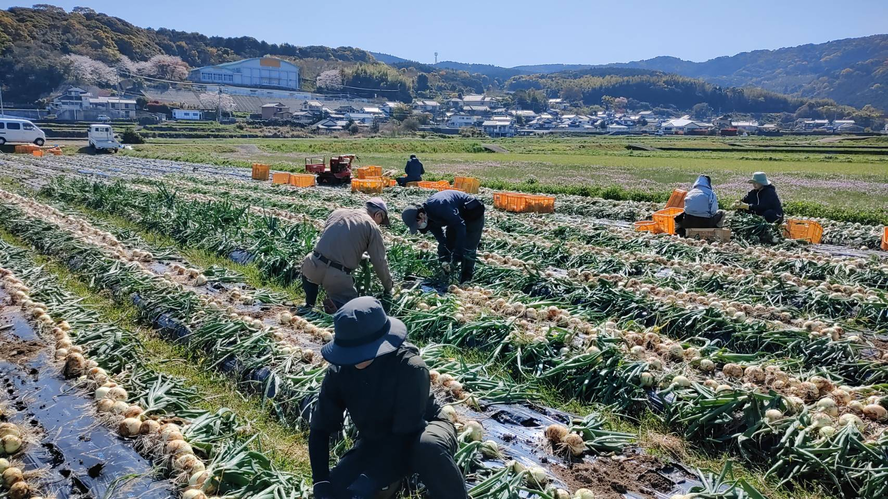

障害のある方とそのご家族を支える、やさしい場所
水俣市にあるA型・B型の就労継続支援事業所です。明るく温かな環境で、自分らしく働けるようサポートを提供しています。
みなまたでみんなが、楽しく働けるようにすることを理念とした事業所です。
※当ホームページは作業の一環としてご利用のメンバーとともに製作中です。
情報等は間違い等がある場合があります。ご理解と合理的な配慮をお願いします。
調理

販売

手芸

パソコン作業

エアコンクリーニング

農作業

〒867-0042
熊本県水俣市大園町3丁目1-27
水俣市立総合体育館より徒歩５分